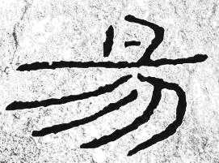
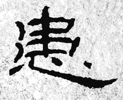
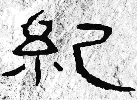

练习 · 语言文字运用
石门颂
从用笔、结体与章法理解摩崖书法的自然形态。
导读
文体与题材：艺术评介（说明性散文）；汉隶摩崖书法。
作者简介：
文本出处：
内容脉络：材料先交代刻石的内容与艺术特点，再从用笔、结体推进到章法分析。书论的引入为“天然之趣”的评价提供参照，后文联系碑、简及篆书笔法，进一步说明其学习价值。
内容主旨：文章从用笔、结体和章法说明《石门颂》的艺术特点，突出其自然、开张的书写意趣与学习价值。
阅读重点：把书论评语落实到具体形式，分清作品特征、评价依据与学习建议。
原文
原文按结构分节；随文内容可定位至对应段落。
作品概况：交代刻石内容与艺术特色。
注释 · 批注 · 札记 1
阅读提示
《石门颂》全称《故司隶校尉犍为杨君颂》，或称之为《杨孟文此处在全篇中的功能是：作品概况：交代刻石内容与艺术特色。。相关概念须结合上下文限定理解。
形式分析：由用笔、结体深入章法。
注释 · 批注 · 札记 1
阅读提示
此书作以中锋运笔，藏头护尾，舒展大度，波势自然，笔力撑挺形式分析：由用笔、结体深入章法。。阅读时应区分该部分的事实陈述、解释关系与评价词。
风格评价：以书论说明天然之趣。
注释 · 批注 · 札记 1
阅读提示
《石门颂》结字疏朗、松宽，中锋用笔圆润舒展，与篆书笔法相从用笔、结体与章法理解摩崖书法的自然形态。
学习价值：联系碑、简与篆书笔法。
注释 · 批注 · 札记 1
阅读提示
《石门颂》是一块古老的摩崖刻石，在摩崖上作这样大的字，既此处在全篇中的功能是：学习价值：联系碑、简与篆书笔法。。相关概念须结合上下文限定理解。
第1题 · 语句衔接
下列填入文中横线处的句子，衔接最恰当的一项是（）
A．不刻意追求工整，字形随石面高低自然调整，疏密不齐却浑然一体
B．不刻意追求工整，疏密不齐却浑然一体，字形随石面高低自然调整
C．字形随石面高低自然调整，不刻意追求工整，疏密不齐却浑然一体
D．字形随石面高低自然调整，疏密不齐却浑然一体，不刻意追求工整
参考答案1展开 / 收起
参考作答
A
审题与考查点
本题考查语句衔接中的事理语序与回指约束。
文本分析
以下按判断、证据与推理逐项分析。选项标题和证据引文均可定位并高亮相应语句。
A项查看证据 ↗
“不刻意追求工整”总说书写取向，随后交代因石调整，最后归结整体效果。按“取向—做法—效果”展开，末句又便于下文回指，局部组织最清楚。
B项查看证据 ↗
先概括效果，再补调整字形的做法，并非逻辑上绝不允许；但此处削弱了从做法到效果的连续说明，也使下文回指不如A紧接整体效果。
C项查看证据 ↗
先说做法再说取向仍能理解，不能称为回指必然落空。不过与上文总说衔接时，A先说明书写取向，再落实做法，信息层级更清晰。
D项查看证据 ↗
把“不刻意追求工整”放在结尾，会使已经形成的效果描述转回原则，收束点发生变化。相较之下，A以“浑然一体”作结更适合引出下文的审美评价。
知识点
补写、排序和复位要求恢复局部句子与整体语篇的联系。空缺受前后内容、话题、指称、逻辑、句式和字数共同约束。满足其中一个条件并不代表答案成立。
相关研习：语句补写、衔接与复位、信息结构与焦点。
解题方法
先判断空缺承担总领、过渡、解释还是总结，再分别列出前文要求和后文要求；形成表达后双向代入，检查指称对象、并列对应、关联词和字数。
易误辨析
术语只能概括已经证明的问题，不能代替逐项推理。区分相对不够贴切、缺乏证据与直接违背文本三种判断。
答案组织与检核
明确选择后，按选项分别写出关键证据、适用概念与推论。比较题说明相对优势；有条件的结论保留限定，不为排除选项而添加原文没有的绝对规则。
第2题 · 病句修改
第三段①与⑤的表达可以怎样调整，使句意更简洁明确？请分别给出一种改写，并说明这属于表达优化还是确定的语法错误。
参考答案2展开 / 收起
参考作答
①可改为“这是其他汉碑不可比拟的”，表达更简练。⑤可改为“由此可见《石门颂》在书法史中的重要地位”，使评价对象和内容更明确。两处均不宜未经论证就断言原句必有语法错误。
审题与考查点
本题考查成分赘余与主语残缺两类语病。
文本分析
证据与推导 1查看证据 ↗
①“相比拟”可被理解为相互比较、比拟，并非见“相”便能机械判为赘余。采用“不可比拟”主要使这里的评价表达更简练。
⑤的对象在前文连续出现，汉语允许语境支持的省略。但补出《石门颂》和“重要”，可使引文后得出的评价更明确。省略可恢复与表达宜明晰是不同层面的判断。
知识点
将判断对象、适用条件与结论范围分别说明，再以具体词句验证解释；概念名称不能代替推导。
解题方法
先恢复原句的句法和指称关系，检验读者是否能确定对象；再比较改写是否减少歧义、保持原意。
易误辨析
“不够简洁”不等于“不合语法”，“可以补主语”也不等于“必须补主语”。
答案组织与检核
分别写出改句与改动收益，避免用“成分赘余”“主语残缺”标签替代证据。
第3题 · 成语辨析
填入文中第四段括号内的词语，不恰当的一项是（）
A．绝无仅有
B．凤毛麟角
C．独一无二
D．无与伦比
参考答案3展开 / 收起
参考作答
B
审题与考查点
本题考查成语的语义侧重与适用对象辨析。
文本分析
以下按判断、证据与推理逐项分析。选项标题和证据引文均可定位并高亮相应语句。
A项查看证据 ↗
“绝无仅有”突出极少、罕见，可以承接文中对独特艺术表现的评价。但它并非经过作品数量统计的结论，仍应放在鉴赏性语境中理解。
B项查看证据 ↗
“凤毛麟角”通常以珍贵而稀少的人或事物为对象。此处重在评价一件作品的独特艺术面貌，数量稀少并非主要判断；不能简单规定此词只能用于人。
C项查看证据 ↗
“独一无二”直接突出独特性，与所评作品的形式和风格相接。它与“凤毛麟角”的差别主要是独特性质和同类数量的着眼点不同。
D项查看证据 ↗
“无与伦比”强调比较中的出色程度，适合文中的赞赏语气。此处是审美评价，不应把修辞性的高度赞誉当成已经比较所有汉碑后的客观排名。
知识点
成语具有相对固定的结构和约定化意义。适配判断须综合核心意义、适用对象、感情色彩、语体、搭配与句法位置；意义相近并不保证可在同一空缺中互换。
解题方法
从空缺前后提取语义要求，确认所需结构与对象，再逐一代入候选词，检查褒贬方向、程度与搭配。存在开放答案时，应说明可接受的语义条件，避免无边界地罗列近义词。
易误辨析
术语只能概括已经证明的问题，不能代替逐项推理。区分相对不够贴切、缺乏证据与直接违背文本三种判断。
答案组织与检核
明确选择后，按选项分别写出关键证据、适用概念与推论。比较题说明相对优势；有条件的结论保留限定，不为排除选项而添加原文没有的绝对规则。
第4题 · 书法赏析
结合本文所讲的结体特点，请从下面《石门颂》的三个字中任选一个进行赏析。80字左右。



参考答案4展开 / 收起
参考作答
（任选一例即可）
示例一（“易”）：上部两横长短不一、向右上取势，与下部舒朗的空间形成鲜明对比；“勿”部撇画长短曲直各异，错落排叠。全字上密下疏，斜中寓正，活泼多姿，正见“结法险奇”之趣。
示例二（“患”）：“串”部紧凑，竖画穿连、横画穿插避让；“心”部卧钩向右下极尽舒展，三点各具姿态、彼此呼应。上紧下松，斜中求正，于平正骨干中见险奇之态。
示例三（“纪”）：左旁“⺰”纤细收束、位置偏上，右部“己”之竖弯钩大幅延展、圆转舒展。左右一收一放、一细一粗，对比强烈而重心安稳，错落有致，粗细变化鲜明。
审题与考查点
本题考查以文本所述书理观照具体字形的迁移能力，其学理支点有二。
文本分析
证据与推导 1查看证据 ↗
本文谓《石门颂》“骨干平正而结法险奇，疏密、斜正、大小参差，活泼多姿”，即字的重心骨架端正，而局部笔画的走向、收放、疏密刻意打破均衡，于不平衡中重建平衡，所谓“斜中寓正”“险中求稳”。
证据与推导 2查看证据 ↗
摩崖书丹，“笔随崖走”，字形不主故常，随石面之势赋形，故同一碑中大小错综、斜正相生，得天然之趣而无雕琢痕。
证据与推导 3查看证据 ↗
先观整体——审一字之疏密配置、斜正关系与大小对比；再析局部——察笔画之长短、曲直、粗细、向背，以及偏旁之间的穿插避让与收放呼应；终作审美归纳——将形质观察收束于文本所揭之书理（“结法险奇”“活泼多姿”“天然之趣”），使评析有理据而不流于印象式描述。
知识点
图表把数量、结构或空间关系转化为视觉形式，图像赏析则结合可见细节讨论表现方式。两类任务均须先准确描述可见信息，再作解释，不能用主题推测代替观察。
解题方法
书法单字赏析＝整体格局（疏密∕斜正∕大小）＋笔画形质（长短∕曲直∕粗细）＋书理印证（平正与险奇的辩证、因势赋形），三阶递进，持之有故。
易误辨析
【方法】描字形而不引文本书理，评析无据；三例并写致超字，或空谈“天然之趣”脱离具体字形。
答案组织与检核
整体格局观察（疏密∕斜正∕收放）（书法章法·结体的疏密斜正）；笔画细节与偏旁避让分析（书法章法·笔画形质）；扣“结法险奇”“活泼多姿”书理收束（书法章法·因势赋形）；篇幅80字左右（语言表达·简明连贯）。
第5题 · 推荐语拟写
班级拟举办《石门颂》书法艺术讲座，请结合材料内容，为宣传海报撰写一则推荐语。要求：突出特点，至少运用一种修辞格，不超过50个字。
参考答案5展开 / 收起
参考作答
示例：千年摩崖，汉隶奇珍！《石门颂》以野鹤闲鸥之姿，演绎篆隶交融之美，带你领略东汉书法的山林气象！
审题与考查点
明确任务是“推荐语拟写”，并分别核验材料范围、表达对象与题面限定。答案应解释具体语句如何支持判断。
文本分析
“千年摩崖，汉隶奇珍”四字两两相对，节奏铿锵，一言其历史之久、材质之特，二言其书体归属与珍异品格，信息密度极高。
证据与推导 2查看证据 ↗
“以野鹤闲鸥之姿”化用杨守敬《评碑记》“其行笔真如野鹤闲鸥，飘飘欲仙”的评语，以具象意象传达《石门颂》行笔的超逸，且援引名家定评以增可信度。
证据与推导 3查看证据 ↗
“演绎”“带你领略”赋予碑刻以生命姿态，并直接向受众发出邀约；“篆隶交融”“山林气象”则凝练提取材料中“与篆书笔法相通”“多山林之气”的特质信息。
知识点
将判断对象、适用条件与结论范围分别说明，再以具体词句验证解释；概念名称不能代替推导。
解题方法
对偶、比喻、拟人、引用、排比等辞格均可选用，但须显豁可辨，忌生僻晦涩；字数受限时，当先保信息点与修辞格，再删削冗余修饰。宣传语写作＝提炼特质信息＋显性修辞包装＋邀约式收尾，三者在限定字数内求最大表达效能。
易误辨析
无修辞或修辞隐晦难辨；超出字数，或信息空泛不扣材料具体特点。
答案组织与检核
提取摩崖、汉隶、山林之气等特质信息（信息·要点提取整合）；至少一种显豁可辨的修辞（修辞学·修辞格建构运用）；邀约式收尾、50字以内（语言运用·宣传语得体表达）。
参考文献
本文关联
语句补写、衔接与复位2 处
阅读条目 →知识点 ↗相关研习：语句补写、衔接与复位、信息结构与焦点。
关联研习 ↗本篇收录于语言运用与信息阅读。依据具体问题，可进一步比较语句补写、衔接与复位、信息结构与焦点、短语结构与层次分析、句子成分与主干、成语的语境适配、词义与语境、图表与图像阅读、主观题的推导与组织、比喻、语域与表达得体。
信息结构与焦点2 处
阅读条目 →知识点 ↗相关研习：语句补写、衔接与复位、信息结构与焦点。
关联研习 ↗本篇收录于语言运用与信息阅读。依据具体问题，可进一步比较语句补写、衔接与复位、信息结构与焦点、短语结构与层次分析、句子成分与主干、成语的语境适配、词义与语境、图表与图像阅读、主观题的推导与组织、比喻、语域与表达得体。
短语结构与层次分析2 处
阅读条目 →知识点 ↗相关研习：短语结构与层次分析、句子成分与主干。
关联研习 ↗本篇收录于语言运用与信息阅读。依据具体问题，可进一步比较语句补写、衔接与复位、信息结构与焦点、短语结构与层次分析、句子成分与主干、成语的语境适配、词义与语境、图表与图像阅读、主观题的推导与组织、比喻、语域与表达得体。
句子成分与主干2 处
阅读条目 →知识点 ↗相关研习：短语结构与层次分析、句子成分与主干。
关联研习 ↗本篇收录于语言运用与信息阅读。依据具体问题，可进一步比较语句补写、衔接与复位、信息结构与焦点、短语结构与层次分析、句子成分与主干、成语的语境适配、词义与语境、图表与图像阅读、主观题的推导与组织、比喻、语域与表达得体。
成语的语境适配2 处
阅读条目 →知识点 ↗相关研习：成语的语境适配、词义与语境。
关联研习 ↗本篇收录于语言运用与信息阅读。依据具体问题，可进一步比较语句补写、衔接与复位、信息结构与焦点、短语结构与层次分析、句子成分与主干、成语的语境适配、词义与语境、图表与图像阅读、主观题的推导与组织、比喻、语域与表达得体。
词义与语境2 处
阅读条目 →知识点 ↗相关研习：成语的语境适配、词义与语境。
关联研习 ↗本篇收录于语言运用与信息阅读。依据具体问题，可进一步比较语句补写、衔接与复位、信息结构与焦点、短语结构与层次分析、句子成分与主干、成语的语境适配、词义与语境、图表与图像阅读、主观题的推导与组织、比喻、语域与表达得体。
图表与图像阅读2 处
阅读条目 →知识点 ↗相关研习：图表与图像阅读、主观题的推导与组织。
关联研习 ↗本篇收录于语言运用与信息阅读。依据具体问题，可进一步比较语句补写、衔接与复位、信息结构与焦点、短语结构与层次分析、句子成分与主干、成语的语境适配、词义与语境、图表与图像阅读、主观题的推导与组织、比喻、语域与表达得体。
主观题的推导与组织2 处
阅读条目 →知识点 ↗相关研习：图表与图像阅读、主观题的推导与组织。
关联研习 ↗本篇收录于语言运用与信息阅读。依据具体问题，可进一步比较语句补写、衔接与复位、信息结构与焦点、短语结构与层次分析、句子成分与主干、成语的语境适配、词义与语境、图表与图像阅读、主观题的推导与组织、比喻、语域与表达得体。
比喻2 处
阅读条目 →知识点 ↗相关研习：比喻、语域与表达得体。
关联研习 ↗本篇收录于语言运用与信息阅读。依据具体问题，可进一步比较语句补写、衔接与复位、信息结构与焦点、短语结构与层次分析、句子成分与主干、成语的语境适配、词义与语境、图表与图像阅读、主观题的推导与组织、比喻、语域与表达得体。